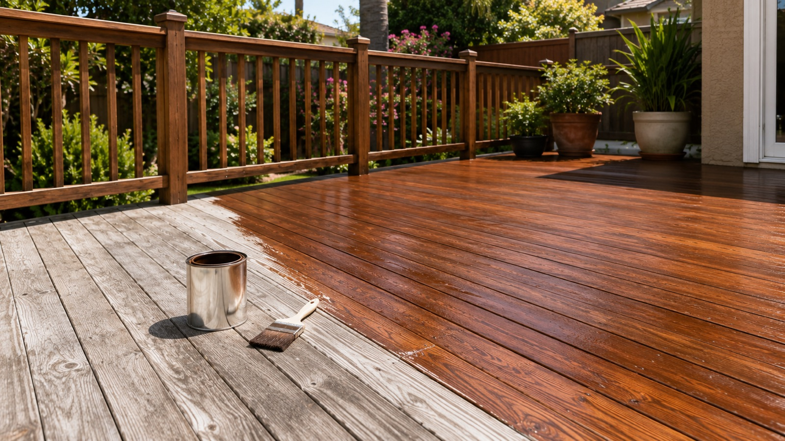
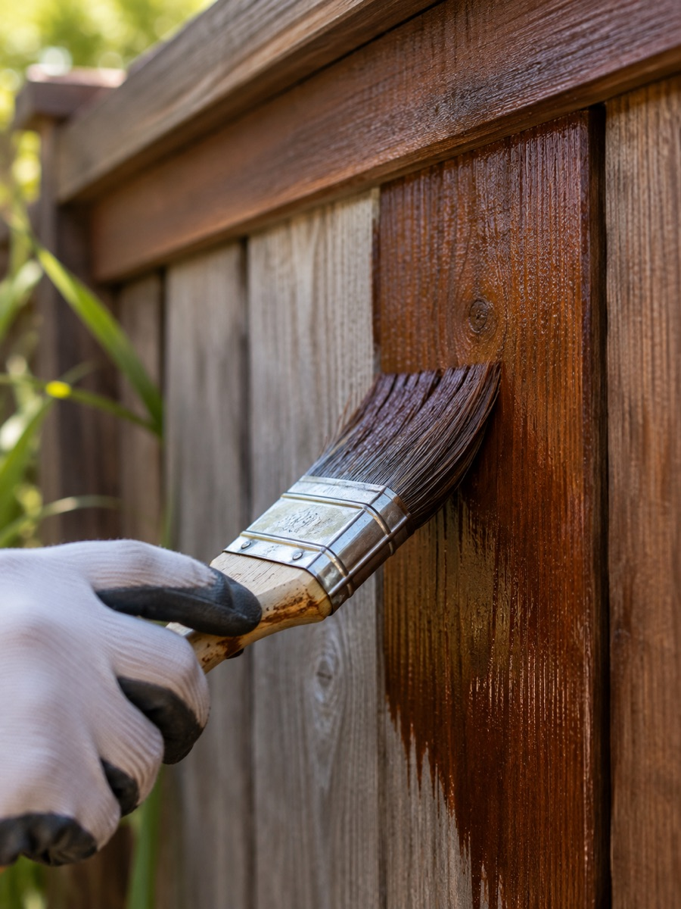

Deck & Fence Staining in Burbank, CA
Sun and dry heat wear down bare wood fast. We clean, repair, and reseal decks and fences for homeowners across Burbank, with free estimates every time.
Gone out to the backyard lately and noticed your deck looks more gray than brown? Sun and dry air wear down unprotected wood fast around Burbank, and a deck or fence that hasn't been touched up in a few years starts to show it. We provide deck and fence staining for homeowners across the city, cleaning the wood, fixing what's damaged, and applying a stain that actually protects it instead of just changing the color for a season. One visit covers both the deck and the fence if you need it, and the whole job costs far less than tearing out and replacing boards that still have good wood underneath the weathering.
What Deck & Fence Staining Involves
The work starts with clearing the space: patio furniture and planters off the deck, or overgrown plants trimmed back from the fence line. We wash the entire surface next to lift dirt, mildew, and whatever's left of the old finish, since new stain won't hold on top of grime. Any loose nails or screws get tightened, and boards that are cracked or rotted get swapped out before we move on. The wood needs to dry all the way through before staining, since stain applied over damp wood doesn't soak in the way it's supposed to. Once everything's dry, we apply a stain that soaks into the grain rather than forming a film on top the way paint would, so the wood keeps its natural texture.

When You Need Deck & Fence Staining
Around here, most decks and fences hold their stain for two to four years before they need attention again, less if the wood faces west or south and takes the brunt of the afternoon sun. Watch for wood that's turned gray or silvery, water that soaks straight in instead of beading up when it lands on the surface, rough or splintering spots you can feel underfoot, and stain that's clearly worn thin around stairs, gates, and anywhere else that gets touched or walked on constantly. Wood left too long without stain starts drying out at a deeper level, which makes the eventual job bigger and pricier than it needed to be.
Why Deck & Fence Wood Fails
Unprotected wood takes a beating from three directions at once. Constant sun exposure breaks down the fibers and bleaches out color, whatever moisture does get in swells the grain and eventually leads to rot, and ordinary foot traffic grinds away finish unevenly, faster on stairs and other high-use spots than the rest of the structure. A lot of restaining jobs also fail early simply because the wood wasn't cleaned properly first. Stain brushed over dirt or old flaking product doesn't bond right, and it wears off within months instead of holding for years.
What Affects Deck & Fence Staining Cost
What you pay comes down to how big the deck is or how long a run of fence you've got, how much of the wood needs repair before staining can even start, and which type of stain you choose: solid, semi-transparent, or clear. Wood that's already gone gray and dry needs more sanding and prep than wood that's been kept up on a regular schedule, and that adds time to the job. We come look at the wood ourselves before quoting a price, since a photo alone doesn't tell us how far gone the finish actually is.
Restaining vs. Board Replacement
Not every gray, weathered deck or fence needs to come apart. If the boards themselves are solid and it's really just the finish that's failed, a thorough cleaning and fresh stain brings it right back. Replacement is worth considering when boards are split clean through, feel soft or spongy when you press on them, or when the damage covers more than just a handful of spots. Tell us upfront which boards concern you, and we'll give you a straight answer on which ones are worth saving and which ones aren't.
Frequently Asked Questions
How long does a deck or fence staining job take?
For most Burbank properties, figure one to three days total once you include cleaning, letting the wood dry, any repairs, and the actual staining. A larger property or wood that needs more repair work can push that timeline out a bit.
How soon can I use the deck again after staining?
Give it at least a full day before walking on it, and hold off on putting furniture or rugs back for a few more days. The stain needs time to cure all the way through, not just feel dry on top.
Should I choose stain or paint for my fence?
Stain sinks into the wood and lets the grain show through, while paint sits as a solid layer on the surface. For wood near the ground that deals with moisture, stain tends to outlast paint since there's no film to crack or peel.
Can you match the stain color I already have?
Usually, yes. If you know the product that was used before, tell us, or hand us a sample piece, and we'll get you as close a match as the current condition of the wood allows.
Ready to see your deck or fence looking like new again? Call (847) 242-8940, or send us the form on this page and we'll follow up with a free estimate.